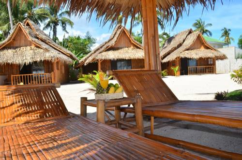
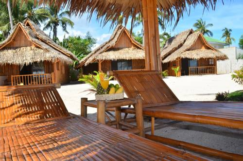

Bantayan is a laid back island just north of cebu. There are three main cities, Bantayan city, Santa Fe and Madridejos. You find plenty of resorts at the beach of Santa Fe. This is also the only beach that is cleaned. There are plenty more beaches around the whole island but they are all full of plastic rubbish and other waste. The town of Madridejos is somewhat enjoyable for an afternoon. Virtually all travellers stay in Santa Fe. You find french baguettes, mexican burritos, german sausages and plenty of expats with young philippinas there. Despite the number of resorts, there is still lots of room for silence and solitude.
venture into unexplored virgin island & halantagaan island, lunch included
swim in a big lake inside a cave. A unique experience. Transfer & Entry Fee included
explore the island on wheels, great fun

 

ATMs can only be found in Bantayan City. If you book with us you don't have to carry much. ATM charges in the Philippines are 200 PHP + the fees of you bank at home.
There are no buses on Bantayan Island. Jeepneys run regularly between the three major towns Santa Fe, Madridejos and Bantayan City. Of course you can also rent a scooter here.
| 1580 | The Augustinians established the Parish of Bantayan as a convent under the patronage of La Asuncion de Nuestra Señora (The Ascension of Our Lady), a mission-station of the friars in the Visayas and thus the first parish in Cebu province and one of the few parishes still in existence outside Mexico which were once a part of the Archdiocese of Mexico. |
| 1603 | The Augustinians relinquished the administration of the church to the secular clergy. During the time of Bishop Pedro de Arce, Daan Bantayan (also Daanbantayan) and the nearby villages located in northern Cebu were placed under the administration of the parish,[v] followed by the island of Maripipi. |
| 1628 | The biggest Moro attack took place when a fleet of vintas attacked, killing or abducting more than 800 natives mostly from the village of Hilingigay, now barangay Suba, and burning down the church.[w] Juan de Medina wrote that the priest and a few Spanish residents tried to defend but had to run and hide after running out of ammunition. |
| 1754 | Moro raid left the church and community in ashes. |
| 1778 | The old Spanish roads linking Santa Fe, Bantayan and Madridejos were constructed through forced labour |